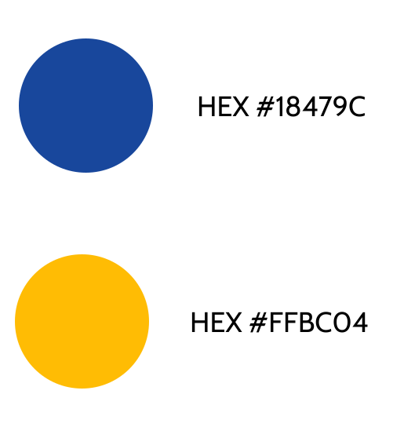
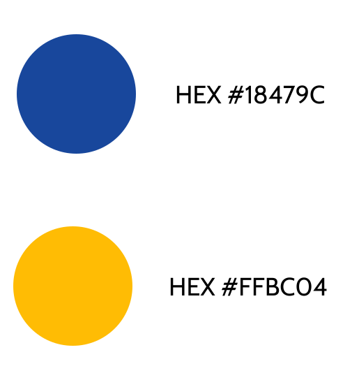

Seraph
A secure, professional platform to store all your work

-
My Roles:
-
UX Researcher
-
UX Design
-
Visual Design
-
Branding
-
User Testing
-
Deliverables:
-
User Surveys
-
Competitive Analysis
-
User Personas
-
User Stories
-
Site Map
-
User Flows
-
Wireframes
-
Branding
-
Style Guide
-
Hi-Fi Prototype
-
Specifications:
-
Tools:
-
Figma
-
Sketch
-
Usability Hub
-
Google Forms
-
Duration:
-
Three months
Problem:
After taking the time listening to users about their difficulties with current cloud storage apps, I found that there are concerns with security, running out of storage space and navigating the user interface.
Solution:
Seraph is a professional platform that allows users to store and access their work on the web easily and securely. The storage plans give users plenty of space for what they need to store on their cloud at the right price for their budget.
Goals:
Seraph is a professional platform that allows users to store and access their work on the web easily and securely. The storage plans give users plenty of space for what they need to store on their cloud at the right price for their budget.

Research and Discovery
Survey Analysis
I began by gathering feedback from users to learn what frustrations they were experiencing with their current cloud storage apps.

Competitive Analysis
I highlighted some of the weaknesses in the competition to discover how Seraph could fill in the gaps to cater to our users.

- 1. New button can be more prominent
- 2. Not an accessible color combination
- 3. Dropdown menu task unclear
- 1. Storage usage unknown
- 2. Left hand buttons difficult to find
- 3. Too many steps to find deleted items
- 4. Too many steps to share items
- 1. Storage usage unknown
- 2. Left hand buttons difficult to find
- 3. Icon actions unclear
Developing User Personas
To help keep user needs at the forefront of my mind throughout the design process these personas were created by combining what I had learned about users through survey analysis and further interviews.
Daniel Meyerson
Film Editor | Age: 38 | Austin, TX
- Motivation: Store a variety of large files securely
- Frustration: Tracking files in different locations and limited space
- “Paying for extra storage space gets to be very expensive.”

Sonya Hernandez
Teacher | Age: 32 | New York, NY
- Motivation: Create, store and collaborate securely
- Frustration: Search easily and notifications when collaborating
- “I hate when I can’t find a file because I forget what I named it.”
Information Architecture
Structuring the app
The research I gathered helped to guide how I priotized tasks and planned the map and flows for the app.

Sketching it out
I experimented between horizontal and vertical navigation menus with various layouts in my initial sketches.

On to test users
The wireframes I created served as my prototype for my first round of user testing.


What I learned from testing
After testing it was apparent that I needed to make the following changes:
- Move the new button to a more prominent location
- Place dropdown menus for files and folders next to its pertaining item
- Maximize space for user content by repositioning icons
Identity and Branding
Personality
The main concern users listed in survey results was security for protecting mostly work projects. My goal was to come up with a brand that was both friendly and professional while also instilling feelings of trust.


Typography and Color
I chose a color palette and font pairs that aligned with the personality of the brand while providing contrast and user accessibility.
 

Logo Design
Security and cloud storage led me to think of angels because they are protectors in the sky. I drew inspiration from the S in Superman and topped it with a halo to find middle ground between the infantile images of angels and stone statues of angels to create a friendly and heroic brand.

Further Testing
Asking the user
I recruited users to share their preferences to refine the product's visual design.


Users preferred a yellow CTA because the contrast makes it easier to locate.


Users preferred the rounded corners because they give the product a friendlier personality.
Gathering more feedback
In my next iterations I added the branding elements and made CTAs and menus more prominent.


Finishing Touches
High Fidelity Mockup
The final round of user testing and feedback from other designers guided me to make changes that would optimize the use of vertical space and improve the visual cues to clarify messages.


Conclusion
The Seraph project went through several major changes in design throughout its development to discover which design would be most intuitive for users. Listening to individual users helped me realize the problems with cloud storage apps currently on the market which gave me direction to help solve those problems through Seraph’s design. This project taught me the importance of conducting several rounds of user testing and how to implement changes more efficiently with the tools that I was using.